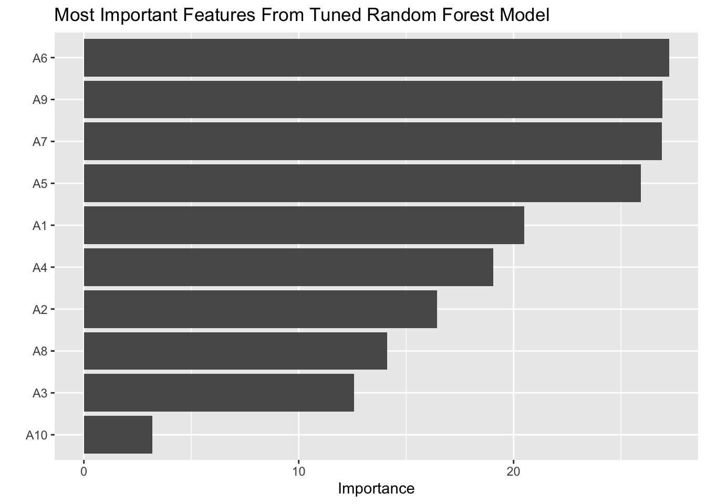
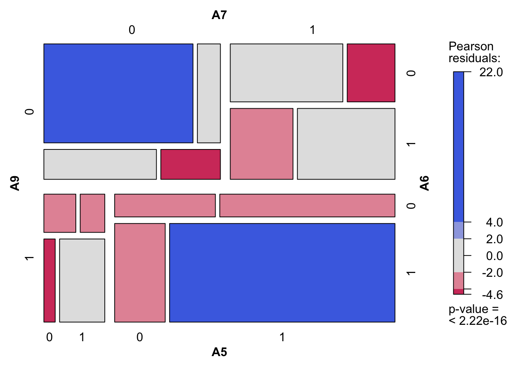
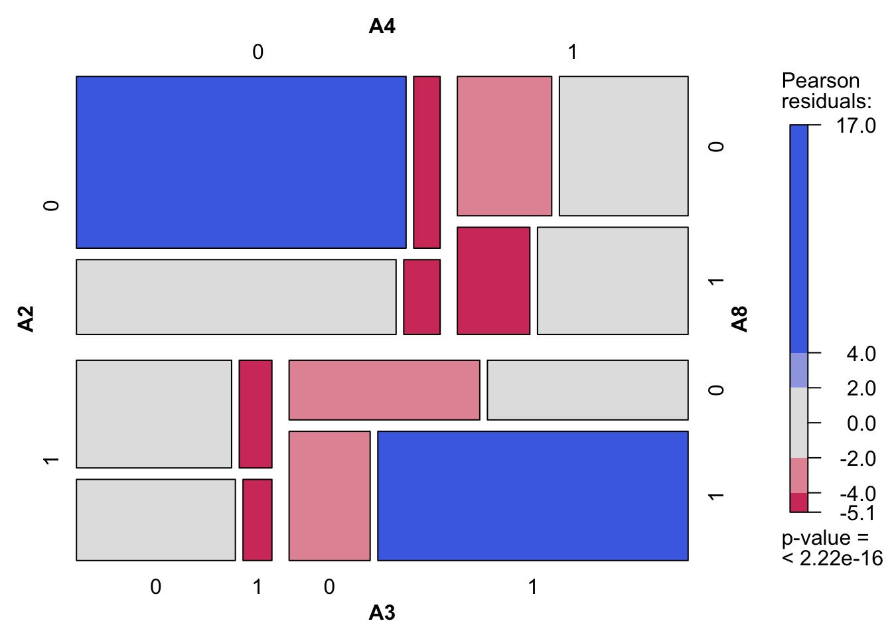
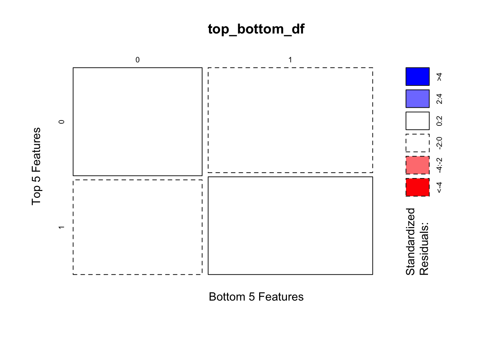
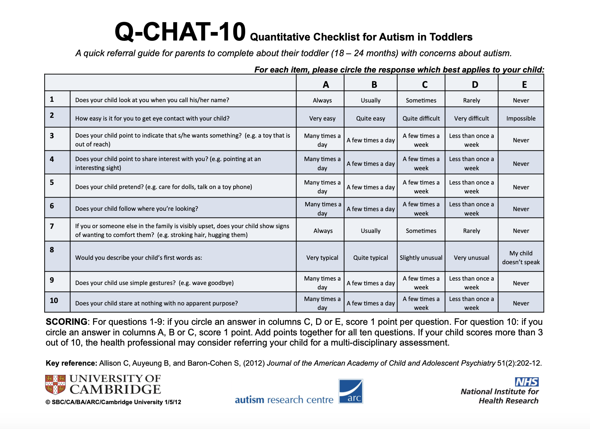

Examining Feature Rank and Dependency in the Q-CHAT-10 ASD Questionnaire
Abstract
Recent research has found consistent and significant increases in the prevalence of Autism Spectrum Disorder (ASD) diagnoses for children since the early 2000s. A widely used screening survey is the Q-CHAT-10 checklist questionnaire. We examine 1054 Q-CHAT-10 responses for toddlers collected by Dr. Fadi Thabtah using random forest, chi-squared tests, and randomized permutation to identify dependency among the questions. From our chi-square tests, we observe a high level of dependency among the similarly ranked most important variables, a moderate level of dependency among similarly low-ranked variables, and no statistically significant relationship between top and bottom groups of variables. To improve the Q-CHAT-10 survey methodology, we suggest selecting the most representative questions out of similarly-ranked high and low-importance questions while developing research on new survey questions, which may be able to help with early ASD identification.
Background and Significance
Social and developmental disabilities place a significant psychological and economic burden on individuals affected by ASD as well as their families, schools and healthcare systems [1]. The increasing prevalence of ASD is likely due to a variety of causes including increasing rates of diagnosis, greater degree of sensitivity in diagnostic criteria, shifting demographics, and/or biological changes. Accurate and early screening is crucial, and allows time and resources to be allocated in a more effective way. Early identification of ASD may improve the efficacy of treatment and reduce the long-term economic burdens of families. Recent technological advancements have paved the way for modern statistical learning techniques to be used in screening for multiple diseases, including ASD [2].
Our study uses open source data from 1054 Q-CHAT-10 toddler questionnaires collected by Dr. Thabtah, from the Nelson Marlborough Institute of Technology via the ASD test app in 2018 [3]. We used random forests to identify the largest contributing variables involved in the Q-CHAT-10 questionnaire for toddlers1 and permutation tests to explore the dependency between questions.
Methods
We use Tidymodels [5] in R [6] to tune a random forest model. Our model produces a ranking of questions by relative importance in predicting an overall ASD screening result.2 Based on our variable importance ranking, we conduct several chi-square tests with permuted samples and test dependency between several of the top-ranked questions. We also conduct a larger chi-square test in which the two groups are 4000 bootstrap samples from the top 5 questions and 4000 bootstrap samples from the bottom 5 questions. We tested if top and bottom groups were independent of each other. We conduct multiple hypothesis tests so we set an adjusted alpha level of 0.001 / (# of tests) = 0.001 / (10) = 0.0001. With such a low significance level, we are taking into account the fact that with each additional test we conduct, there’s a greater chance of falsely rejecting the null hypothesis (Type I error). An 80/20 training/testing split was used to fit our random forest model. Within our training data, 20% is saved as the validation set of our random forest model [7].
Data Overview and Variable Selection
For our random forest model, we use 10 predictors, questions A1 through A10, out of 18 total variables from the data set. These 10 questions are binary numerical responses from the survey questions within the Q-CHAT-10 questionnaire, which indicate if the response represents ASD-like traits or not [3]. The response variable of our model is the final screening result, Class.ASD.Trait, a categorical variable with two levels: “yes” and “no”. Yes corresponds to a questionnaire score of 4 or more. There are several other variables such as ethnicity, jaundice, and gender, etc. which we do not use in our model.
Results
We observe that the most optimal random forest model has an mtry (number of randomly sampled predictors at each tree split) of 1 and a minimum number of data points at each node of 26. Our final tuned random forest model yielded the following confusion matrix on the testing data.
Discussion & Conclusions
We decided to closely examine several of the top questions because we expect them to screen for similar traits. Question 6 probes into whether a child pays attention to where his or her parents are looking at and 9 pertains to whether a child is able to communicate through simple gestures [9]. Questions 6 and 9 relate to whether the toddler pays attention to his or her surroundings and is able to communicate his or her needs. Questions 5 and 7 respectively screen for whether the toddler plays pretend or knows and feels the emotions of his her family if they are upset [10]. Although there is some repetition between similarly ranked questions, questions are not repetitive to the extent that the entire top or bottom group could be removed: the distribution of screening results between top group and bottom group are largely independent.
To improve the Q-CHAT-10 survey methodology, we suggest selecting the most representative questions out of similarly high-ranked question and selecting the most representative questions out of low-importance questions. This may reduce redundancy and improve the overall accuracy of the survey. We conclude that, in addition to the issue of some redundancy because of the high correlation between top features, more questions may be added to the questionnaire that are different from existing ones to increase the robustness of the Q-CHAT-10 survey and improve its ability to capture social and behavioral ASD-like traits.
References:
[1]
Lavelle, T. A., Weinstein, M. C., Newhouse, J. P., Munir, K., Kuhlthau, K. A. and Prosser, L. A. (2014). Economic Burden of Childhood Autism Spectrum Disorders. Pediatrics 133 e520–9.
[2]
Eslami, T., Almuqhim, F., Raiker, J. S. and Saeed, F. (2021). Machine learning methods for diagnosing autism spectrum disorder and attention- deficit/hyperactivity disorder using functional and structural MRI: A survey. Frontiers in Neuroinformatics 14.
[3]
Thabtah, F. (2018). Autism screening data for toddlers.
[4]
Anon. (2012). Q-CHAT-10 quantitative checklist for autism in toddlers.
[5]
Kuhn, M. and Wickham, H. (2020). Tidymodels: A collection of packages for modeling and machine learning using tidyverse principles.
[6]
R Core Team. (2022). R: A language and environment for statistical computing. R Foundation for Statistical Computing, Vienna, Austria.
[7]
Tidymodels. (2022). A predictive modeling case study.
[8]
Wolff, N., Kohls, G., Mack, J. T., Vahid, A., Elster, E. M., Stroth, S., Poustka, L., Kuepper, C., Roepke, S., Kamp-Becker, I. and Roessner, V. (2022). A data driven machine learning approach to differentiate between autism spectrum disorder and attention-deficit/hyperactivity disorder based on the best-practice diagnostic instruments for autism. Scientific Reports 12.
[9]
Ellawadi, A. B. and Weismer, S. E. (2014). Assessing Gestures in Young Children With Autism Spectrum Disorder. Journal of Speech, Language, and Hearing Research 57 524–31.
[10]
McDonald, N. M. and Messinger, D. S. (2011). Empathic Responding in Toddlers at Risk for an Autism Spectrum Disorder. Journal of Autism and Developmental Disorders 42 1566–73.
[11]
Wickham, H., Averick, M., Bryan, J., Chang, W., McGowan, L. D., François, R., Grolemund, G., Hayes, A., Henry, L., Hester, J., Kuhn, M., Pedersen, T. L., Miller, E., Bache, S. M., Müller, K., Ooms, J., Robinson, D., Seidel, D. P., Spinu, V., Takahashi, K., Vaughan, D., Wilke, C., Woo, K. and Yutani, H. (2019). Welcome to the tidyverse. 4 1686.
[12]
Tuned Random Forest on Testing Results - Confusion Matrix
| Observed (no) | Observed (yes) | |
|---|---|---|
| Prediction (no) | 57 | 0 |
| Prediction (yes) | 9 | 146 |
Sensitivity = \(\frac{TP}{TP + FN}= \frac{146}{146 + 0}=1\), False Negative rate (Type II error) = 1- sensitivity = 0
Specificity = \(\frac{TN}{TN + FP}=\frac{57}{57 + 9}=0.8636\), False Positive rate (Type I Error) = 1 - specificity = 0.1364
We observe that our tuned random forest model has an OOB (Out-Of-Bag) classification error of 4.2% on our testing data. Our model slightly over-fits the unseen testing data because it is slightly more sensitive than specific. The trade-off of high sensitivity (100%) is a slightly higher false positive rate of (13.64%). A higher probability of a Type 1 error is slightly preferable for early diagnosis to a high Type II probability in screening for ASD in toddlers because it is better for most individuals to receive a correct positive screening result with the exception of a few false positives than failing to classify many ASD-positive individuals [8].
Within our Chi-Square tests, we observed statistically significant relationships between question 9 ~ 6 (\(\chi^{2}(1) = 139.49\), p < 0.0001) and between question 7 ~ 5 (\(\chi^{2}(1) = 96.6\), p < 0.0001). We observed no statistically significant relationship between the 4000 randomly sampled top questions and 4000 randomly sampled bottom questions (\(\chi^{2}(1) = 0.847\), p > 0.0001). This top ~ bottom test validates the general accuracy of the Q-CHAT-10 Checklist because if top and bottom questions are independent of each other, then questions mostly vary and are able to pick up on different behavioral traits. In our contingency tables, we observe that, in general (not in particular pairing of questions), similarly-ranked top questions are highly correlated with each other and bottom questions are moderately correlated with each other.3
Appendix
Below is an equation for predicting the final ASD screening result based on the responses to each survey question. Y represents the final screening result of each toddler: 1 (of concern and should see professional diagnosis) and 0 (negative). The sum of \(x_i\)s represents the sum of the individual scores for each question on the screening survey, which can be one or zero. The true model of our data is deterministic. Since whether the toddler screened for ASD traits is already known, the predictive capabilities of our random forest model are not central to our study. The variable importance plot from our RF model, however, is essential to our understanding of feature dependency and our suggestions for improving the Q-CHAT-10 survey.
\[ y =\begin{cases} 1 & \sum_{i=1}^{10} x_i \geq4\\ 0 & \sum_{i=1}^{10} x_i < 4\\ \end{cases} \]
We used the Tidyverse package [11] to wrangle our data and plotted all Q-CHAT-10 scores on a histogram. The mode is around a score of 4. The center/median of the distribution is around 5. The distribution of Q-CHAT scores is roughly symmetric without significant outliers. Q-CHAT-10 scores range from 0 to 10.
All collected data is a simple random sample (data is independently, identically distributed).


Testing Dependency between Top Questions
In Figure 3, above, the highly saturated quadrants in contingency plots are statistically significant [12]. There are multiple highly saturated blue and red within the contingency table of the top 4 questions ranked from our feature importance. Several of the top questions are highly correlated.

Testing Dependency between Bottom Questions
In Figure 4, there are some highly saturated blue and red cells within the contingency table of the bottom 4 questions ranked from our feature importance. Several of the bottom questions are correlated, but there are a more statistically non-significant grey cells. Although there seems to be some correlation between bottom questions, this correlation seems weaker than the correlation between top questions.

Comparing 4000 Random Samples from Aggregated Group of the Top 5 Feature Paired with 4000 Random Samples from an Aggregated Group of the Bottom 5 Features
There are two categorical variables -> “top” and “bottom” in which responses are “0” for not of concern and “1” for of concern. There is independence of observations: each survey response is not related to another. Large sample size: there’s an expected count condition that 80% of expected cells must be greater than 5 and all expected cells must be greater than 1. In our top ~ bottom data, every expected value in each cell is greater than 200, so the conditions for the chi-square test are met.
Our contingency plot in Figure 5 agrees with the results of our Chi-Square test. All quadrants of our mosaic plot are white, meaning that in each box, there is very small Pearson residual which is close to 0. Since our p-value (0.341) > alpha (0.0001), we fail to reject the null hypothesis that the the distribution of positive screening results in the top group are independent of the distribution of those in the bottom group. The distribution of positive screening results in the top-ranked questions are independent of those in the bottom-ranked questions.
Testing Dependency between Question 6 and Question 9
Large sample size: there’s an expected count condition that 80% of expected cells must be greater than 5 and all expected cells must be greater than 1. In our 9 ~ 6 data, every expected value in each cell is greater than 100, so the conditions for the chi-square test are met.
Since our observed p-value (2.2e-16) is < alpha significance level 0.0001, we reject the null hypothesis that the distribution of positive screening results in question 9 is independent of those in 6.
Testing Dependency Between Question 5 and 7
Large sample size: there’s an expected count condition that 80% of expected cells must be greater than 5 and all expected cells must be greater than 1. In our 7 ~ 5 data, every expected value in each cell is greater than 100, so the conditions for the chi-square test are met.
Since our observed p-value (2.2e-16) is < alpha significance level 0.0001, we reject the null hypothesis that the distribution of positive screening results in question 7 are independent of those in 5.

Footnotes
The Q-CHAT-10 questionnaire is a survey that checks for red flags for ASD screening. The scoring is as follows: “For questions 1-9: if you circle an answer in columns C, D or E, score 1 point per question. For question 10: if you circle an answer in columns A, B or C, score 1 point. Add points together for all ten questions. If your child scores 3 or above, the health professional may consider referring your child for a multi-disciplinary assessment” [4].↩︎
See Figure 2 in Appendix↩︎
See Appendix for full mosaic plots↩︎